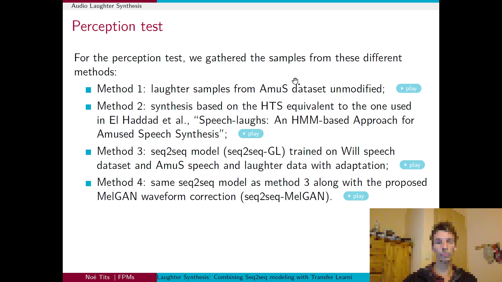

| 2mix | ||||||||
|
text1: A person is discussing related work in separable convolution,
specifically a figure representing separable convolution with
an input tensor of shape H x W x 3,
and
mentioning depthwise convolution with a kernel size K x K x 3 x 3, followed by pointwise convolution
of size 1 x 1 with a kernel size K x K, outputting an output tensor with the same spatial dimensions
but possibly more channels. Other mentioned components include
a standard convolution figure and
parameters related to these convolutions.
|

text2: A person is discussing various methods for audio laughter
synthesis, including Method 1 using samples from the AmuS dataset, Method 2 based on the HTS method
from Speechlaughs, Method 3 utilizing a seq2seq model and trained data, and Method 4 enhancing
Method 3 with an additional waveform correction technique.
|
|||||||
| mixture | s1: | s2: | PTE-s1 | PTE-s2 | AudioSep-s1 | AudioSep-s2 | CLAPSep-s1 | CLAPSep-s2 |
|
text1: A person is discussing
Text-to-Speech (TTS) systems and their
speech encoders, emphasizing that these systems can learn speaker
information without the need for
explicit speaker ID labels. Speech input is being transformed
into text using an encoder, sometimes
employing Automatic Speech Recognition (ASR) representations without human annotation for text
input.
|
text2: A person is discussing speech command recognition performance,
focusing on the Google Speech Commands dataset for v1 and v2, presenting various models, their
accuracy, and model parameters, mentioning MatchboxNet,
ResNet15, DenseNetBC100, Attention RNN,
Harmonic Tensor 2DCNN, and Embedding Head Model, with reference to their respective papers and being
close to the state of the art with fewer parameters for both versions of the dataset.
|
|||||||
| mixture | s1: | s2: | PTE-s1 | PTE-s2 | AudioSep-s1 | AudioSep-s2 | CLAPSep-s1 | CLAPSep-s2 |